토목기사 (2017-05-07 기출문제)
1과목: 응용역학
1. 그림과 같은 2경간 연속보에 등분포하중 w=400㎏/m가 작용할 때 전단력이 “0”이 되는 위치는 지점 A로부터 얼마의 거리(x)에 있는가?
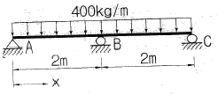
- 0.75m
- 0.85m
- 0.95m
- 1.⑤m
(정답률: 61%)
2. 주어진 단면의 도심을 구하면?
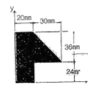
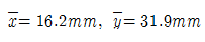
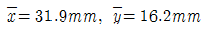
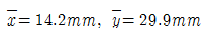
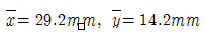
(정답률: 70%)
3. 그림과 같은 단순보에서 B 단에 모멘트 하중 M이 작용할 때 경간 AB 중에서 수직 처짐이 최대가 되는 곳의 거리는 x는? (단, EI는 일정하다.)
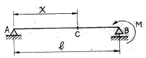
- x = 0.500ℓ
- x = 0.577ℓ
- x = 0.667ℓ
- x = 0.750ℓ
(정답률: 79%)
4. 그림과 같은 강재(steel) 구조물이 있다. AC, BC부재의 단면적은 각각 10cm2, 20cm2이고 연직하중 P=9t이 작용할 때 C점의 연직처짐을 구한 값은? (단 강재의 종탄성계수는 2.0×106㎏/cm2이다.)
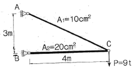
- 0.624㎝
- 0.785㎝
- 0.834㎝
- 0.945㎝
(정답률: 58%)
5. 그림과 같은 직육면체의 윗면에 전단력 V=540㎏이 작용하여 그림(b)와 같이 상면이 옆으로 0.6cm만큼의 변형이 발생되었다. 재료의 전단탄성계수(G)는 얼마인가?
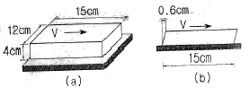
- 10kg/cm2
- 15kg/cm2
- 20kg/cm2
- 25kg/cm2
(정답률: 55%)
6. 그림과 같이 C점이 내부힌지로 구성된 게르버보에서 B지점에 발생하는 모멘트의 크기는?
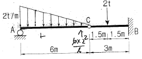
- 9t∙m
- 6t∙m
- 3t∙m
- 1t∙m
(정답률: 70%)
7. 그림과 같은 2개의 캔틸레버보에 저장되는 변형에너지를 각각 U(1), U(2) 라고 할 때 U(1):U(2) 의 비는?
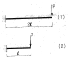
- 2:1
- 4:1
- 8:1
- 16:1
(정답률: 74%)
8. 지간 10m인 단순보 위를 1개의 집중하중 P=20t이 통과할 때 이 보에 생기는 최대 전단력 S와 최대 휨모멘트 M이 옳게 된 것은?
- S=10t M=50t∙m
- S=10t M=100t∙m
- S=20t M=50t∙m
- S=20t M=100t∙
(정답률: 59%)
9. 아래 그림과 같은 부정정보에서 B점의 연직박력(R)은?(오류 신고가 접수된 문제입니다. 반드시 정답과 해설을 확인하시기 바랍니다.)
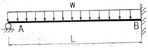
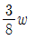
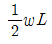
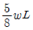
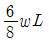
(정답률: 65%)
10. 장주의 탄성좌굴하중(Elastic buckling Load) Pcr은 아래의 표와 같다. 기둥의 각 지지조건에 따른n의 값으로 틀린 것은? (단, E : 탄성계수, I : 단면 2차 모멘트, ℓ : 기둥의높이)
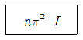
- 양단힌지 : n = 1
- 양단고정 : n = 4
- 일단고정 타단자유 : n = 1/4
- 일단고정 타단힌지 : n = 1/2
(정답률: 77%)
11. 다음 중 정(+)의 값 뿐만 아니라. 부(-)의 값도 갖는 것은?
- 단면계수
- 단면 2차 모멘트
- 단면 2차 반경
- 면 상승 모멘트
(정답률: 81%)
12. 단면이 20㎝×30㎝인 압축부재가 있다. 그 길이가 2.9m일 때 이 압축부재의 세장비는 약 얼마인가?
- 33
- 50
- 60
- 100
(정답률: 67%)
13. 그림과 같은 단면에 전단력 V=60t 이 적용할 때 최대 전단응력은 얼마인가?
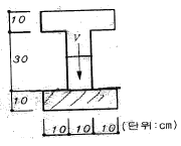
- 127㎏/cm2
- 160㎏/cm2
- 198㎏/cm2
- 213㎏/cm2
(정답률: 64%)
14. 그림과 같이 케이블(cable)에 500㎏의 추가 매달려 있다. 이 추의 중심을 수평으로 3m이동 시키기 위해 케이블 길이 5m지점인 A점에 수평력 P를 가하고 자 한다. 이때 힘 P의 크기는?
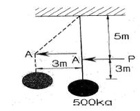
- 375㎏
- 400㎏
- 425㎏
- 450㎏
(정답률: 65%)
15. 아래 그림과 같은 양단고정보에 3/tm의 등분포하중과 10t의 집중하중이 작용할 때 A점의 휨모멘트는?
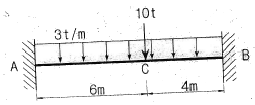
- -31.6t⦁1m
- -32.8t⦁2m
- -34.6t⦁4m
- -36.8t⦁6m
(정답률: 49%)
16. 다음 그림과 같은 3힌지 아치에 집중하중 P가 가해질 때 지점 B에서의 수평반력은?
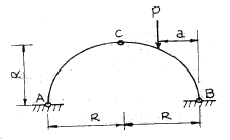
- Pa
- P(R-a)
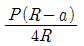
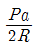
(정답률: 70%)
17. 아래 그림과 같은 트러스에서 부재 AB의 부재력은?(오류 신고가 접수된 문제입니다. 반드시 정답과 해설을 확인하시기 바랍니다.)
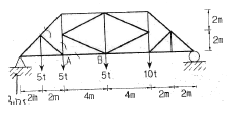
- 10.625t(인장)
- 15.⑤t(인장)
- 15.⑤t(압축)
- 10.625t(압축)
(정답률: 58%)
18. 아래 그림과 같은 내민보에 발생하는 최대 휨모멘트를 구하면?
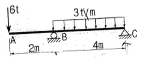
- -8t • m
- -12t • m
- -16t • m
- -20t • m
(정답률: 61%)
19. 아래 그림에서 블록 A를 뽑아내는데 필요한 힘 P는 최소 얼마 이상이어야 하는가? (단, 블록과 접촉면과 마찰계수 u=0.3)
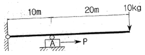
- 3㎏ 이상
- 6㎏ 이상
- 9㎏ 이상
- 12㎏ 이상
(정답률: 73%)
20. 탄성계수가 E, 프와송비가 인 재료의 체적탄성계수는 K는?
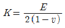
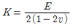
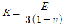
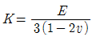
(정답률: 75%)
2과목: 측량학
21. 측량의 분류에 대한 설명으로 옳은 것은?
- 측량 구역이 상대적으로 협소하여 지구의 곡률을 고려하지 않아도 되는 측량을 측지측량이라 한다.
- 측량정확도에 따라 평면기준점측량과 고저기준점 측량으로 구분한다.
- 구면 삼각법을 적용하는 측량과 평면 삼각법을 적용하는 측량과의 근본적인 차이는 삼각형의 내각의 합이다.
- 측량법에는 기본측량과 공공측량의 두 가지로만 측량을 구별한다.
(정답률: 50%)
22. 수준측량에서 시준거리를 같게 함으로써 소거할수 있는 오차에 대한 설명으로 틀린 것은?
- 기포관축과 시준선이 평행하지 않을 때 생기는 시준선 오차를 소거할 수 있다.
- 시준거리를 같게 함으로써 지구곡률오차를 소거할수 있다.
- 표척 시준시 초점나사를 조정할 필요가 없으므로 이로 인한 오차인 시준오차를 줄일 수 있다.
- 표척의 눈금 부정확으로 인한 오차를 소거할 수 있다.
(정답률: 65%)
23. UTM 좌표에 대한 설명으로 옳지 않은 것은?
- 중앙 자오선의 축척 계수는 0.9996이다.
- 좌표계는 경도 6°, 위도 8° 간격으로 나눈다.
- 우리나라 40구역(ZONE)과 43구역(ZONE)에 위치하고 있다.
- 경도의 원점은 중앙자오선에 있으며 위도의 원점은 적도상에 있다.
(정답률: 68%)
24. 1600m2의 정사각형 토지 면적 0.5m2까지 정확하게 구하기 위해서 필요한 변길이의 최대 허용오차는?
- 2.25㎜
- 6.25㎜
- 10.25㎜
- 12.25㎜
(정답률: 71%)
25. 도로공사에서 거리 20m인 성토구간에 대하여 시작단면 A1=72m2, 끝 단면 A2 =182m2, 중앙 단면 Am =132m2 라고 할 때 각주공식에 의한 성토량은?
- 2540.0m3
- 2573.3m3
- 2600.0m3
- 2606.7m3
(정답률: 67%)
26. 도로 기점으로부터 교점(I.P)까지의 추가거리가 400m, 곡선 반지름 R=200m, 교각 I=90°인 원곡선을 설치할 경우, 곡선시점(B.C)은? (단, 중심말뚝거리 =20m)
- No.9
- No.9 +10m
- No.10
- No.10+10m
(정답률: 62%)
27. 곡선설치에서 교각 I=60°, 반지름 R=150m일 때 접선장(T.L)은?
- 100.0m
- 86.6m
- 76.8m
- 38.6m
(정답률: 71%)
28. 수평각 관측 방법에서 그림과 같이 각을 관측하는 방법은?
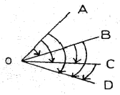
- 방향각 관측법
- 반복, 관측법
- 배각 관측법
- 조합각 관측법
(정답률: 65%)
29. 수치지형도(DIgital Map)에 대한 설명으로 틀린 것은?
- 우리나라는 축척: 1:5000 수치정형도를 국토기본도로 한다.
- 주로 필지정보와 표고자료, 수계정보 등을 얻을수 있다.
- 일반적으로 항공사진측량에 의해 구축된다.
- 축척별 포함 사항이 다르다.
(정답률: 50%)
30. 수준 측량의 야장기입방법 중 가장 간단한 방법으로 전시(B.S.)와 후시(F.S)만 있으면 되는 방법은 주행하는 현상을 보완하기 위해 설치하는 것은?
- 고차식
- 교호식
- 기고식
- 승강식
(정답률: 60%)
31. 수면으로부터 수심의 2/0, 4/10, 6/10, 8/10인 곳에서 유속을 측정한 결과가 각각 1.2m/s, 1.0m/s, 0.7m/s, 0.3m/s이었다면 평균 유속은? (단, 4점법 이용)
- 1.095m/s
- 1.0⑤m/s
- 0.895m/s
- 0.775m/s
(정답률: 54%)
32. 삼각망 조정에 관한 설명으로 옳지 않은 것은?
- 임의 한 변의 길이는 계산경로에 따라 달라질 수 있다.
- 검기선은 측정한 길이와 계산된 길이가 동일하다.
- 1점 주위에 있는 각의 합은 360°이다
- 삼각형의 내각의 합은 180°이다.
(정답률: 66%)
33. 비고 65m의 구릉지에 의한 최대 기복변위는? (단, 사진기의 초점거리 15㎝, 사진의 크기 23㎝×23㎝, 축척: 1:20000이다.)
- 0.14㎝
- 0.35㎝
- 0.64㎝
- 0.82㎝
(정답률: 43%)
34. 클로소이드 곡선(Clothoid curve) 대한 설명으로 옳지 않은 것은?
- 고속도로에 널리 이용된다.
- 곡률이 곡선의 길이에 비례한다.
- 완화곡선(緩和曲線)의 일종이다.
- 클로소이드 요소는 모두 단위를 갖지 않는다.
(정답률: 75%)
35. 항공사진측량의 입체시에 대한 설명으로 옳은 것은?
- 다른 조건이 동일할 때 초점거리가 긴 사진기에 의한 입체상이 짧은 사진기의 입체상보다 높게 보인다.
- 한 쌍의 입체사진 촬영코스 방향과 중복도만 유지하면 두 사진의 축척이 30% 정도 달라도 무관하다.
- 다른 조건이 동일할 때 기선의 길이를 길게 하는 것이 짧은 경우보다 과고감이 크게 된다.
- 입체상의 변화는 기선고도비에 영향을 받지 않는다.
(정답률: 51%)
36. 측점 A에 각관측 장비를 세우고 50m 떨어져 있는 측점 B를 시준하여 각을 관측할 때, 측선 AB에 직각방향으로 3㎝의 옿차가 있었다면 이로 인한 각관측 오차는?
- 0° 1‘ 13“
- 0° 1‘ 22“
- 0° 2‘ 04“
- 0° 2‘ 45“
(정답률: 57%)
37. 직접법으로 등고선을 측정하기 위하여 A점에 레벨을 세우고 기계고 1.5m를 얻었다. 70m 등고선 상의 P점을 구하기 위한 표척(Staff)의 관측값은? (단, A점 표고는 71.6m이다.)
- 1.0m
- 2.3m
- 3.1m
- 3.8m
(정답률: 72%)
38. 하천에서 수애선 결정에 관계되는 수위는?
- 갈수위(DWL)
- 최저수위(HWL)
- 평균최저수위(NLWL)
- 평수위(OWL)
(정답률: 76%)
39. 20m 줄자로 두 지점의 거리를 측정한 결과가 320m이었다. 1회 측정마다 ±3㎜의 우연오차가 발생한다면 두 지점간의 우연오차는?
- ±12㎜
- ±14㎜
- ±24㎜
- ±48㎜
(정답률: 70%)
40. 시가지에서 5개의 측점으로 폐합 트래버스를 구성하여 내각을 측정한 결과, 각관측 오차가 30“이었다. 각 관측의 경중률이 동일할 때 각오차의 처리방법은? (단, 시가지의 허용오차 범위 =20n“ ~ 30”n )
- 재측량한다.
- 각의 크기에 관계없이 등배분한다.
- 각의 크기에 비례하여 배분한다.
- 각의 크기에 반비례하여 배분한다.
(정답률: 57%)
3과목: 수리학 및 수문학
41. 삼각위어에서 수두를 H라 할 때 위어를 통해 흐르는 유량 Q과 비례하는 것은?
- H1/2
- H1/2
- H3/2
- H5/2
(정답률: 70%)
42. 도수(hydraulic jump)에 대한 설명으로 옳은 것은?
- 수문을 급히 개방할 경우 하류로 전파되는 흐름
- 유속이 파의 전파속도보다 작은 흐름
- 상류에서 사류로 변할 때 발생하는 현상
- Froude수가 1보다 큰 흐름에서 1보다 작아질 때 발생하는 현상
(정답률: 48%)
43. 어떤 계속된 호우에 있어서 총유효우량 ∑Re(m3), 직접유출의 총량 ∑Qe(m3), 유역면적 A(㎢) 사이에 성립하는 식은?
- ∑Re=A×∑Qe
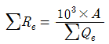
- ∑Re=103×A×∑Qe
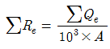
(정답률: 58%)
44. DAD 해석에 관계되는 요소로 짝지어진 것은?
- 강우깊이, 면적, 지속기간
- 적설량, 분포면적, 적설일수
- 수심, 하천 단면적, 홍수기간
- 강우량, 유수단면적, 최대수심
(정답률: 73%)
45. 그림과 같이 원형관 중심에서 V의 유속으로 물이 흐르는 경우에 대한 설명으로 틀린 것은? (단, 흐름은 층류로 가정한다.)
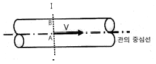
- A점에서의 유속은 단면 평균유속의 2배다.
- A점에서의 마찰력은 V2에 비례한다.
- A점에서 B점으로 갈수록 마찰력은 커진다.
- 유속은 A점에서 최대인 포물선 분포를 한다.
(정답률: 64%)
46. 두 개의 수평한 판이 5㎜ 간격으로 놓여있고, 점성계수 0.01N•s/cm2인 유체로 채워져 있다. 하나의 판을 고정시키고 다른 하나의 판을 2m/s로 움직일 때 유체 내에서 발생되는 전단응력은?
- 1N/cm2
- 2N/cm2
- 3N/cm2
- 4N/cm2
(정답률: 47%)
47. 관내의 손실수두(hL)와 유량(Q)과의 관계로 옳은 것은? (단, Darcy-Weisbach 공식을 사용)
- h
- hLQ1.85
- hLQ2
- hLQ2.5
(정답률: 45%)
48. 유역의 평균 폭 B, 유역면적 A, 본류의 유로연장 L인 유역의 형상을 양적으로 표시하기 위한 유역 형상계수는? (문제 오류로 실제 시험에서는 2, 3번이 정답처리 되었습니다. 여기서는 2번을 누르면 정답 처리 됩니다.)
- A/L
- A/L2
- B/L
- B/L2
(정답률: 70%)
49. 지하수 흐름과 관련된 Dupuit의 공식으로 옳은 것은? (단, q = 단위폭당의 유량, ℓ = 침윤선 길이, k= 투수계수)
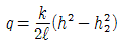
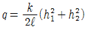
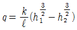
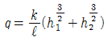
(정답률: 47%)
50. 강우자료의 변화요소가 발생한 과거의 기록치를 보정하기 위하여 전반적인 자료의 일관성을 조사 하려고 할 때, 사용할 수 있는 가장 적절한 방법 은?
- 정상연강수량비율법
- Thiessen의 가중법
- 이중누가우량분석
- DAD 분석
(정답률: 76%)
51. 수면폭이 1.2m인 V형 삼각 수로에서 2.8m3/s의 유량이 0.9m 수심으로 흐른다면 이때의 비에너지는? (단, 에너지보정계수 a=1로 가정한다.)
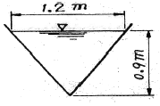
- 0.9m
- 1.14m
- 1.84m
- 2.27m
(정답률: 51%)
52. 층류영역에서 사용 가능한 마찰손실계수의 산정식은? (단, Re : Reyondls 수)
- 1
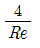
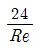
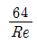
(정답률: 72%)
53. 수심 10.0m에서 파속(C)이 50.0m/s인 파랑이 입사각(β1) 30°로 들어올 때, 수심 8.0m에서 굴절된 파랑의 입사각(β2)? (단, 수심 8.0m에서 파랑의 파속(C2)=40.0m/s)
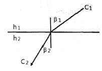
- 20.58°
- 23.58°
- 38.68°
- 46.15°
(정답률: 46%)
54. 벤츄리미터(Venturi meter)의 일반적인 용도로 옳은 것은?
- 수심 측정
- 압력 측정
- 유속 측정
- 단면 측정
(정답률: 64%)
55. 단면적 20cm2인 원형 오리피스(orifice)가 수면에서 3m의 깊이에 있을 때, 유출수의 유량은? (단, 유량계수는 0.6이라 한다.)
- 0.0014m3/s
- 0.0092m3/s
- 0.0119m3/s
- 0.1524m3/s
(정답률: 64%)
56. 그림과 같은 관로의 흐름에 대한 설명으로 옳지 않은 것은? (단, h1, h2는 위치 1,2에서의 수두, hLA , hLBs는 각각 관로 A 및 B에서의 손실수두이다.)
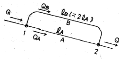
- hA=hLB
- Q=QA+QB
- QA=QB
- h2=h1-hLA
(정답률: 51%)
57. 1시간 간격의 강우량이 15.2㎜, 25.4㎜, 20.3㎜, 7.6㎜이고, 지표 유출량이 47.9㎜일 때,
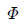
-index는?- 5.15mm/hr
- 2.58mm/hr
- 6.25mm/hr
- 4.25mm/hr
(정답률: 50%)
58. 비중 r1의 물체가 비중 r2(r2>r1)의 액체에 떠있다. 액면 위의 부피(V1)과 액면 아래의 부피(V2) 비(V1/V2)는?
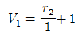
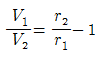
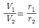
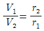
(정답률: 55%)
59. 기계적 에너지와 마찰손실을 고려하는 베르누이 정리에 관한 표현식은? (단, EP 및 ET 는 각각 펌프 및 터빈에 의한 수두를 의미하며, 유체는 점1에서 점2로 흐른다.)
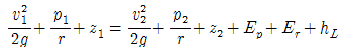
(정답률: 59%)
60. 수심 2m, 폭 4m, 경사 0.0004인 직사각형 단면수로에서 유량 14.56m3/s가 흐르고 있다. 이 흐름에서 수로표면 조도계수는(n)는?
- 0.0096
- 0.01099
- 0.02096
- 0.030991
(정답률: 62%)
4과목: 철근콘크리트 및 강구조
61. 인장 이형철근의 정착길이 산정시 필요한 보정계수(α,β)에 대한 설명으로 틀린 것은?
- 피복두께가 3db 미만 또는 순간격이 6db 미만인에폭시 도막철근일 때 철근 도막계수(β)는 1.5를 적용한다.
- 상부철근(정착길이 또는 겹침이음부 아래 300㎜를 초과되게 굳지 않은 콘크리트를 친 수평철근)인 경우 철근배치 위치계수(α)는 1.3을 사용한다.
- 아연도금 철근은 철근 도막계수(β)를 1.0으로 적용한다.
- 에폭시 도막철근이 상부철근인 경우 상부철근의 위치계수(α)와 철근 도막계수(β)의 곱, αβ가 1.6보다 크지 않아야 한다.
(정답률: 58%)
62. 그림과 같은 용접부에 작용하는 용력은?
- 112.7MPa
- 118.0MPa
- 120.3Mpa
- 125.0Mpa
(정답률: 72%)
63. T형 PSC 보에 설계하중을 작용시킨 결과 보의 처짐은 0이었으며, 프리스트레스 도입단계부터 부착된 계측장치로부터 상부 탄성변형률 ?=3.5×10-4을 얻었다. 콘크리트 탄성계수 Ec=26000MPa, T형보의 단면적 Ag =150000mm2, 유효율 R=0.85일 때, 강재의 초기긴장력 Pi를 구하면?
- 1606kN
- 1365kN
- 1160kN
- 2269kN
(정답률: 49%)
64. 아래 그림과 같은 보에서 계수전단력 Vu =225kN에 대한 가장 적당한 스터럽간격은? (단, 사용된 스터럽은 철근 D13이며, 철근D13의 단면적은 127mm2, fck=24MPa, fy=350Mpa이다.)
- 110mm
- 150mm
- 210mm
- 225mm
(정답률: 54%)
65. 강도 설계에서 fck=29MPa, fy=300MPa 일 때 단철근 직사각형보의 균형철근비(pb)는?
- 0.034
- 0.046
- 0.⑤1
- 0.067
(정답률: 56%)
66. 철근콘크리트의 강도설계법을 적용하기 위한 기본 가정으로 틀린 것은?
- 철근의 변형률은 중립축으로부터의 거리에 비례한다.
- 콘크리트의 변형률은 중립축으로부터의 거리에 비례한다.
- 인장 측 연단에서 철근의 극한변형률은 0.003으로 가정한다.
- 항복강도 fy이하에서 철근의 응력은 그 변형률의 Es배로 본다.
(정답률: 48%)
67. 보의 활하중은 1.7t/m, 자중은 1.1t/m인 등분포하중을 받는 경간 12m인 단순 지지보의 계수 휨모멘트(Mu)는?
- 68.4t • m
- 72.7t • m
- 74.9t • m
- 75.4t • m
(정답률: 59%)
68. bw=300㎜, d=500㎜인 단철근직사각형 보가 있다. 강도설계법으로 해석할 때 최소철근량은 얼마인가? (단, fck35MPa, fy=400MPa이다.)
- 555mm2
- 525mm2
- 5⑤mm2
- 485mm2
(정답률: 64%)
69. 아래의 그림과 같은 복철근 보의 탄성처짐이 15㎜라면 5년 후 지속하중에 의해 유발되는 전체 처짐은? (단, Asl =3000mm2, As′=1000mm2, =2.0)
- 35mm
- 38mm
- 40mm
- 45mm
(정답률: 57%)
70. 철근콘크리트 부재의 철근 이음에 관한 설명중 옳지 않은 것은?
- D35를 초과하는 철근은 겹침이음을 하지 않아야 한다.
- 인장 이형철근의 겹침이음에서 A급 이음은 1.3l 이상, B급 이음은 1.0dl이상 겹쳐야 한다.(단, dl 규정에 의해 계산된 인장 이형철근의 정착길이 이다.)
- 압축 이형철근의 이음에서 콘크리트의 설계기준압 축강도가 21MPa 미만인 경우에는 겹침이음길이를 1/3증가 시켜야 한다.
- 용접이음과 기계적이음은 철근의 항복강도의 125%이상을 발휘할 수 있어야 한다.
(정답률: 53%)
71. 프리스트레스의 손실을 초래하는 원인 중 프리텐션 방식보다 포슽트텐션 방식에서 크게 나타나는 것은?
- 콘크리트의 탄성수축
- 강재와 쉬스의 마찰
- 콘크리트의 크리프
- 콘크리트의 건조수축
(정답률: 64%)
72. 철근콘크리트 구조물의 전단철근에 대한 설명으로 틀린 것은?
- 이형철근을 전단철근으로 사용하는 경우 설계기준 항복강도 f는 550MPa을 초과하여 취할 수 없다.
- 전단철근으로서 스터럽과 굽힘철근을 조합하여 사용할 수 있다.
- 주인장철근에 45°이상의 각도로 설치되는 스터럽은 전단철근으로 사용할 수 있다.
- 경사스터럽과 굽힘철근은 부재 중간높이인 0.5d에서 반력점 방향으로 주인장철근까지 연장된 45°선과 한 번 이상 교차되도록 배치하여야 한다.
(정답률: 62%)
73. 다음은 L형강에서 인장응력 검토를 위한 순폭계산에 대한 설명이다. 틀린 것은?
- 전개 총폭(b) = b1+b2 - t 이다.
 인 경우 순폭(bn) = b - d이다.
인 경우 순폭(bn) = b - d이다.- 리벳선간거리(g) = g1-t이다.
 인 경우 순폭(bn) = b - d -
인 경우 순폭(bn) = b - d - 이다.
이다.
(정답률: 61%)
74. 직사각형 단순보에서 계수 전단력 Vㅕ =70kN을 전단철근 없이 지지하고자 할 경우 필요한 최소 유효깊이 d는? (단, b=400㎜, fck=24MPa, fy= 350Mpa)
- 426㎜
- 572㎜
- 611㎜
- 751㎜
(정답률: 57%)
75. 경간이 8m인 직사각형 PSC(b=300㎜, h=500㎜)에 계수하중 w=40kN/m가 작용할 때 인장측의 콘크리트 응력이 0이 되려면 얼마의 긴장력으로 PS강재를 긴장해야 하는가? (단, PS강재는 콘크리트 단면도심에 배치되어 있음.)
- P = 1250 kN
- P = 1880 kN
- P = 2650 kN
- P = 3840 kN
(정답률: 63%)
76. b= 300㎜, d=500㎜, As=3-D25=1520mm2가 1열로 배치된 단철근 직사각형 보의 설계 휨강도 øM 은 얼마인가? (단, fck=28MPa, fy=400MPa이고, 과소철근보이다.)
- 132.5kN·m
- 183.3kN·m
- 236.4kN·m
- 307.7kN·m
(정답률: 58%)
77. 슬래브와 보가 일체로 타설된 비대칭 T형보 (반 T형보)의 유효폭은 얼마인가? (단, 플랜지 두께 = 100mm이고, 복부폭 = 300mm,인접보와 내측거리 = 1600mm, 보의 경간 6.0m)
- 800mm
- 900mm
- 1000mm
- 1100mm
(정답률: 50%)
78. 강도 설계법에서 그림과 같은 T형보의 응력 사각형 블록의 깊이(a)는 얼마인가? (단, As =14-D25=7094mm2, fck=21Mpa, fy=300Mpa)
- 120㎜
- 130㎜
- 140㎜
- 150㎜
(정답률: 65%)
79. 프리스트레스트 콘크리트 중 포스트텐션 방식의 특징에 대한 설명으로 틀린 것은?
- 부착시키지 않은 PSC 부재는 부착시킨 PSC 부재에 비하여 파괴강도가 높고, 균열 폭이 작아지는 등 역학적 성능이 우수하다.
- PS 강재를 곡선상으로 배치 할 수 있어서 대형구조물에 적합하다.
- 프리캐스트 PSC 부재의 결합과 조립에 편리하게 이용된다.
- 부착시키지 않은 PSC 부재는 그라우팅이 필요하지 않으며, PS 강재의 재긴장도 가능하다.
(정답률: 53%)
80. Ag =180000mm2, fck=24MPa, fy=350MPa이고, 종방향 철근의 전체 단면적(Ast)=4500mm2인 나선철근기둥(단주)의 공칭축강도(Pn)는?
- 2987.7kN
- 3067.4kN
- 3873.2kN
- 4381.9kN
(정답률: 48%)
5과목: 토질 및 기초
81. Vane Test에서 Vane의 지름 5㎝, 높이 10㎝파괴시 토오크가 590㎏·㎝일 때 점착력은?
- 1.29㎏/cm2
- 1.57㎏/cm2
- 2.13㎏/cm2
- 2.76㎏/cm2
(정답률: 38%)
82. 단면적 20cm2, 길이 10㎝의 시료를 15㎝의 수두차로 정수위 투수시험을 한 결과 2분동안 150cm3의 물이 유출되었다. 이 흙의 비중은 2.67이고, 건조중량이 420g이었다. 공극을 통하여 침투하는 실제 침투유속 Vs는 약 얼마인가?
- 0.018㎝/sec
- 0.296㎝/sec
- 0.437㎝/sec
- 0.628㎝/sec
(정답률: 46%)
83. 단위중량이 1.8t/m3인 점토지반의 지표면에서 5m되는 곳의 시료를 채취하여 압밀시험을 실시한 결과 과압밀비(over consolidation ratio)가 2임을 알았다. 선행압밀압력은?
- 9t/m2
- 12t/m2
- 15t/m2
- 18t/m2
(정답률: 48%)
84. 연약지반에 구조물을 축조할 때 피조미터를 설치하여 과잉간극수압의 변화를 측정했더니 어떤 점에서 구조물 축조 직후 10t/m2이었지만, 4년 후는 2t/m2이었다. 이때의 압밀도는?
- 20%
- 40%
- 60%
- 80%
(정답률: 62%)
85. 다음 그림과 같은 p - q 다이아그램에서 K 선이 파괴선을 나타낼 때 이 흙의 내부마찰각은?
- 32°
- 36.5°
- 38.7°
- 40.8°
(정답률: 57%)
86. 다음 그림에서 A점의 간극 수압은?
- 4.87t/m2
- 6.67t/m2
- 12.31t/m2
- 4.65t/m2
(정답률: 56%)
87. 연약지반 위에 성토를 실시한 다음, 말뚝을 시공하였다. 시공 후 발생될 수 있는 현상에 대한 설명으로 옳은 것은?
- 성토를 실시하였으므로 말뚝의 지지력은 점차 증가한다.
- 말뚝을 암반층 상단에 위치하도록 시공하였다면말뚝의 지지력에는 변함이 없다.
- 압밀이 진행됨에 따라 지반의 전단강도가 증가되므로 말뚝의 지지력은 점차 증가된다.
- 압밀로 인해 부의 주면 마찰력이 발생되므로 말뚝의 지지력은 감소된다.
(정답률: 63%)
88. 얕은 기초에 대한 Terzaghi의 수정지지력 공식은아래의 표와 같다. 4m×5m의 직사각형 기초를 용할 경우 형상계수 αβ의 값으로 옳은 것은?
- α=1.2, β=0.4
- α=1.28, β=0.42
- α=1.24, β=0.42
- α=1.32, β=0.38
(정답률: 56%)
89. 다짐되지 않은 두께 2m, 상대밀도 40%의 느슨한사질토 지반이 있다. 실내시험결과 최대 및 최소간극비가 0.80, 0.40으로 각각 산출되었다. 이 사질토를 상대 밀도 70%까지 다짐할 때 두께의 감소는 약 얼마나 되겠는가?
- 12.4㎝
- 14.6㎝
- 22.7㎝
- 25.8㎝
(정답률: 44%)
90. ∅.=33°인 사질토에 25°경사의 사면을 조성하려고한다. 이 비탈면의 지표까지 포화되었을 때 안전율을 계산하면? (단, 사면 흙의 = 1.8t/m3)
- 0.62
- 0.70
- 1.12
- 1.41
(정답률: 52%)
91. 사질토 지반에 축조되는 강성기초 접지압 분포에 대한 설명 중 맞는 것은?
- 기초 모서리 부분에서 최대 응력이 발생한다.
- 기초에 작용하는 접지압 분포는 토질에 관계없이 일정하다.
- 기초의 중앙 부분에서 최대 응력이 발생한다.
- 기초 밑면의 응력은 어느 부분이나 동일하다.
(정답률: 58%)
92. 말뚝 지지력에 관한 여러 가지 공식 중 정역학적 지지력 공식이 아닌 것은?
- ‥or의 공식
- Terzaghi의 공식
- Meyerhof의 공식
- Engineering - News 공식
(정답률: 71%)
93. 평판재하실험 결과로부터 지반의 허용지지력 값은 어떻게 결정하는가?
- 항복강도의 1/2, 극한강도의 1/3 중 작은 값
- 항복강도의 1/2, 극한강도의 1/3 중 큰 값
- 항복강도의 1/3, 극한강도의 1/2 중 작은 값
- 항복강도의 1/3, 극한강도의 1/2 중 큰 값
(정답률: 57%)
94. 흙의 다점에 관한 설명으로 틀린 것은?
- 다짐에너지가 클수록 최대건조단위중량(rmax)은 커진다.
- 다짐에너지가 클수록 최적함수비(wopt)는 커진다.
- 점토를 최적함수비(wopt)보다 작은 함수비로 다지면 면모구조를 갖는다.
- 투수계수는 최적함수비(wopt) 근처에서 거의 최소값을 나타난다.
(정답률: 67%)
95. 아래 그림에서 A점 흙의 강도정수가 c=3t/m2, ∅=30°일 때 A점의 전단강도는?
- 6.93t/m2
- 7.39t/m2
- 9.93t/m2
- 10.39t/m2
(정답률: 63%)
96. 점토지반으로부터 불교란 시료를 채취하였다. 이 시료는 직경 5㎝, 길이 10㎝이고, 습윤무게는 350g이고, 함수비가 40%일 때 이 시료의 건조단위무게는?
- 1.78g/cm3
- 1.43g/cm3
- 1.27g/cm3
- 1.14g/cm3
(정답률: 53%)
97. rt = 1.9t/m3 ø= 30°인 뒤채움 모래를 이용하여 8m 높이의 보강토 옹벽을 설치하고자 한다. 폭 75㎜, 두께는 3.69㎜의 보강띠를 연직방향 설치간격 Sy = 0.5m 수평방향 설치간격 Sh = 1.0m로 시공하고자 할 때, 보강띠에 작용하는 최대힘 Tmax의 크기를 계산하면?
- 1.53t
- 2.53t
- 3.53t
- 4.53t
(정답률: 44%)
98. 아래 표의 설명과 같은 경우 강도정수 결정에 적합한 삼축 압축 시험의 종류는?
- 압밀배수 시험(CD)
- 압밀비배수 시험(CU)
- 비압밀비배수 시험(UU)
- 비압밀배수 시험(UD)
(정답률: 64%)
99. 두 개의 규소판 사이에 한 개의 알루미늄판이 결합된 3층구조가 무수히 많이 연결되어 형성된 점토광물로서 각 3층구조 사이에는 칼륨이온(K+)으로 결합되어 있는 곳은?
- 몬모릴로나이트(montmorillonite)
- 할로이사이트(halloysite)
- 고령토(kaolinite)
- 일라이트(illite)
(정답률: 62%)
100. 두께 2m인 투수성 모래층에서 동수경사가 1/10이고, 모래의 투수계수가 5×10-2㎝/sec라면이 모래층의 폭 1m에 대하여 흐르는 수량은 매 분당 얼마나 되는가?
- 6000cm3/min
- 600cm3/min
- 60cm3/min
- 6cm3/min
(정답률: 45%)
6과목: 상하수도공학
101. 그림은 급속여과지에서 시간경과에 따른 여과유량(여과속도)의 변화를 나타낸 것이다. 정압 여과를 나타내고 있는 것은?
- a
- b
- c
- d
(정답률: 53%)
102. 유입하수의 유량과 수질변동을 흡수하여 균등화함으로서 처리시설의 효율화를 위한 유량조정조에 대한 설명으로 옳지 않은 것은?
- 조의 유효수심은 3~5m를 표준으로 한다.
- 조의 형상은 직사각형 또는 정사각형을 표준으로 한다.
- 조 내에는 오염물질의 효율적 침전을 위하여 난류를 일으킬 수 있는 교반시설을 하지 않도록 한다.
- 조의 용량은 유입하수량 및 유입부하량의 시간변동을 고려하여 설정수량을 초과하는 수량을 일시 저류하도록 정한다.
(정답률: 52%)
103. 관망에서 등치관에 대한 설명으로 옳은 것은?
- 관의 직경이 같은 관을 말한다.
- 유속이 서로 같으면서 관의 직경이 다른 관을 말한다.
- 수두손실이 같으면서 관의 직경이 다른 관을 말한다.
- 수원과 수질이 같은 주관과 지관을 말한다.
(정답률: 57%)
104. 하수도계획의 원칙적인 목표연도로 옳은 것은?
- 10년
- 20년
- 50년
- 100년
(정답률: 75%)
1⑤. 용존산소 부족곡선(DO Sag Curve)에서 산소의 복귀율(회복속도)이 최대로 되었다가 감소하기 시작하는 점은?
- 임계점
- 변곡점
- 오염 직후 점
- 포화 직전 점
(정답률: 62%)
106. 도수 및 송수관로 중 일부분이 동수경사선보다 높은 경우 조치할 수 있는 방법으로 옳은 것은?
- 상류 측에 대해서는 관경을 작게 하고, 하류 측에 대해서는 관경을 크게 한다.
- 상류 측에 대해서는 관경을 작게 하고, 하류측에 대해서는 접합정을 설치한다.
- 상류 측에 대해서는 관경을 크게 하고, 하류 측에 대해서는 관경을 작게 한다.
- 상류 측에 대해서는 접합정을 설치하고, 하류 측에 대해서는 관경을 크게 한다.
(정답률: 45%)
107. 슬러지지표(SVI)에 대한 설명으로 옳지 않은 것은?
- SVI는 침전슬러지량 100mL중에 포함되는 MLSS를 그램(g)수로 나타낸 것이다.
- SVI는 활성슬러지의 침강성을 보여주는 지표로 광범위하게 사용된다.
- SVI가 50~150일 때 침전성이 양호하다.
- SVI가 200 이상이면 슬러지 팽화가 의심된다.
(정답률: 55%)
108. 유량이 100000m3/d이고 BOD가 2㎎/L인 하천으로 유량 1000m3/d, BOD 100mg/L인 하수가 유입된다. 하수가 유입된 후 혼합된 BOD의 농도는?
- 1.97㎎/L
- 2.97㎎/L
- 3.97㎎/L
- 4.97㎎/L
(정답률: 60%)
109. 계획급수인구를 추정하는 이론곡선식이 로 표현할 때, 식 중의 K가 의미하는 것은? (단, y: x년 후의 인구, x: 기준년부터의 경과 년수, e:자연대수의 밑, a, b:상수)(오류 신고가 접수된 문제입니다. 반드시 정답과 해설을 확인하시기 바랍니다.)
- 현재인구
- 포화인구
- 증가인구
- 상주인구
(정답률: 67%)
110. 80%의 전달효율을 가진 전동기에 의해서 가동되는 85% 효율의 펌프가 300L/s의 물을 25.0m 양수할때 요구되는 정동기의 출력(㎾)은?
- 60.0㎾
- 73.3㎾
- 86.3㎾
- 107.9㎾
(정답률: 49%)
111. 호수나 저수지에서 발생되는 성층현상의 원인과 가장 관계가 깊은 요소는?
- 적조현상
- 미생물
- 질소(N), 인(P)
- 수온
(정답률: 51%)
112. 하수관거 직선부에서 맨홀(Man hole)의 관경에 대한 최대 간격의 표준으로 옳은 것은?
- 관경 600㎜ 이하의 경우 최대간격 50m
- 관경 600㎜ 초과 1000㎜ 이하의 경우 최대 간격 100m
- 관경 1000㎜ 초과 1500㎜ 이하의 경우 최대간격 125m
- 관경 1650㎜ 이상의 경우 최대간격 150m
(정답률: 62%)
113. 정수장에서 1일 50000m3의 물을 정수하는데 침전지의 크기가 폭 10m, 길이 40m, 수심 4m인 침전지 2개를 가지고 있다. 2지의 침전지가 이론상 100%제거할 수 있는 입자의 최소 침전속도는? (단, 병렬연결기준)
- 31.25m/d
- 62.5m/d
- 125m/d
- 625m/d
(정답률: 55%)
114. 급수방법에는 고가수조식과 압력수조식이 있다. 압력수조식을 고가수조식과 비교한 설명으로 옳지 않은 것은?
- 조작 상에 최고·최저의 압력차가 적고, 큰수압의 변동 폭이 적다.
- 큰 설비에는 공기 압축기를 설치해서 때때로 고익를 보급하는 것이 필요하다.
- 취급이 비교적 어렵고 고장이 많다.
- 저수량이 비교적 적다.
(정답률: 45%)
115. 하수의 배제방식 중 분류식 하수도에 대한 설명으로 틀린 것은?
- 우수관 및 오수관의 구별이 명확하지 않은 곳에서는 오접의 가능성이 있다.
- 강우초기의 오염된 우수가 직접 하천 등으로 유입될 수 있다.
- 우천 시에 수세효과가 있다.
- 우천 시 월류의 우려가 없다.
(정답률: 58%)
116. 수질시험 항목에 관한 설명으로 옳지 않은 것은?
- DO(용존산소) 물속에 용해되어 있는 분자상의 산소를 말하며 온도가 높을수록 DO농도는 감소한다.
- COD(화학적 산소요구량)는 수중의 산화 가능한 유기물이 일정 조건에서 산화제에 의해 산화되는데 요구되는 산소량을 말한다.
- 잔류염소는 처리수를 염소소독하고 남은 염소로 차아염소산이온과 같은 유리잔류염소와 클로라민 같은 결합잔류염소를 말한다.
- BOD(생물화학적 산소요구량)는 수중 유기물이 혐기성 미생물에 의해 3일간 분해될 때 소비되는 산소량을 ppm으로 표시한 것이다.
(정답률: 60%)
117. 어떤 지역의 강우지속시간(t)과 강우강도 역수(1/I)와의 관계를 구해보니 그림과 같이 기울기가 1/3000, 절편이 1/150이 되었다. 이 지역의 강우강도를 Talbot형 ()으로 표시한 것으로 옳은 것은?
(정답률: 70%)
118. 우수조정지의 설치장소로 적당하지 않은 곳은?
- 토사의 이동이 부족한 장소
- 하수관거의 유하능력이 부족한 장소
- 방류수로의 유하능력이 부족한 장소
- 하류지역 펌프장 능력이 부족한 장소
(정답률: 65%)
119. 특정오염물의 제거가 필요하여 활성탄 흡착으로 제거 하고자한다. 연구결과 수량 대비 5%의 활성탄을 사용할 때 오염물질의 75%가 제거되며 10%의 활성탄을 사용한 때는 96.5%가 제거되었다. 이 특정오염물의 잔류농도를 처음농도의 0.5% 이하로 처리하기 위해서는 활성탄을 수량대비 몇 %로 처리하여야 하는가? (단 흡착과정은 Freundlich 방정식 X=K • C/n만족한다.)
- 약 10%
- 약 12%
- 약 14%
- 약 16%
(정답률: 28%)
120. 계획오수량 산정시 고려 사항에 대한 설명으로 옳지 않은 것은?
- 지하수량은 1인1일최대오수량의 10~20%로 한다.
- 계획1일 평균오수량은 계획 1일 최대오수량의 70~80%를 표준으로 한다.
- 계획시간 최대오수량은 계획 1일 평균오수량의 1시간당 수량의 0.9 ~1.2배를 표준으로 한다.
- 계획 1일 최대오수량은 1인1일 최대오수량에 계획인구를 곱한 후 공장폐수량, 지하수량 기타 배수량을 더한 값으로 한다.
(정답률: 71%)